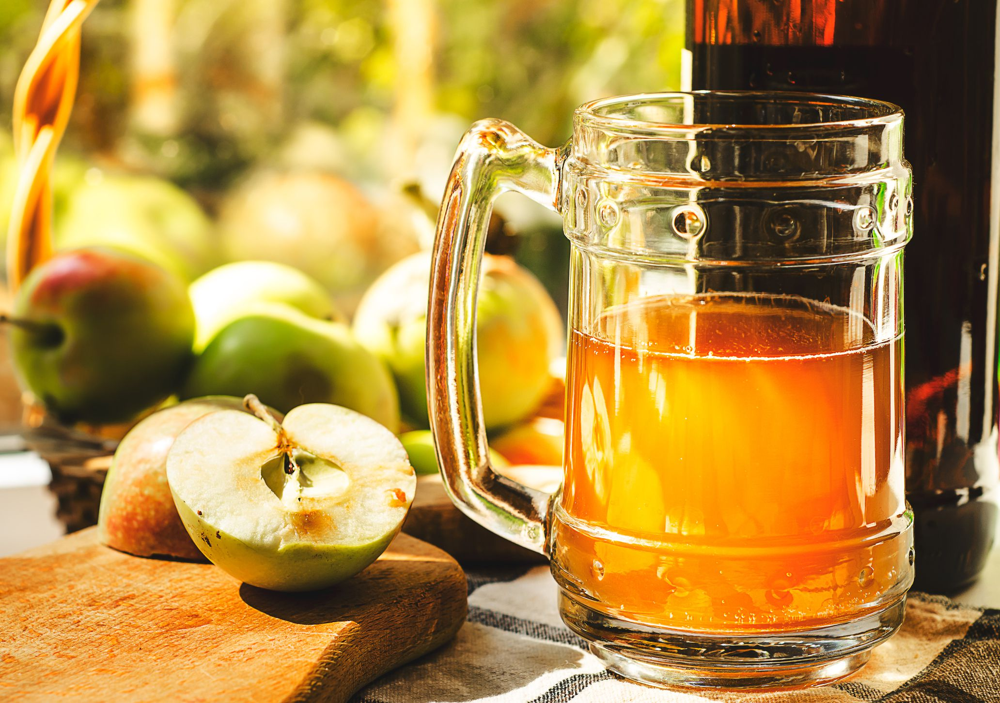

Cider

Cider is an alcoholic beverage. It is a product of the fermentation of apples.
“Extracts and specialty grains? Hmm, could that process translate to cider?”(…)
Ingredients
- 3 gal. (11.4 L) Great Value apple juice
- 1.5 lb. (680 g) Granny Smith apples
- 1 lb. (454 g) Pink Lady (Cripps Pink) apples
- 1 lb. (454 g) Honeycrisp apples
- 8 oz. (227 g) Envy apples
- 8 oz. (227 g) Ambrosia apples
- 10 g EC-1118 yeast
- 3 oz. (85 g) corn sugar to prime, if bottling
Steps
- Add the 3 gal. (11.4 L) juice to fermenter and pitch yeast at 68°F (20°C).
- After one week, core, peel, and cut the apples into small pieces, and gently add to the fermenter.
- After another week, bottle with priming sugar or keg and force carbonate as desired.